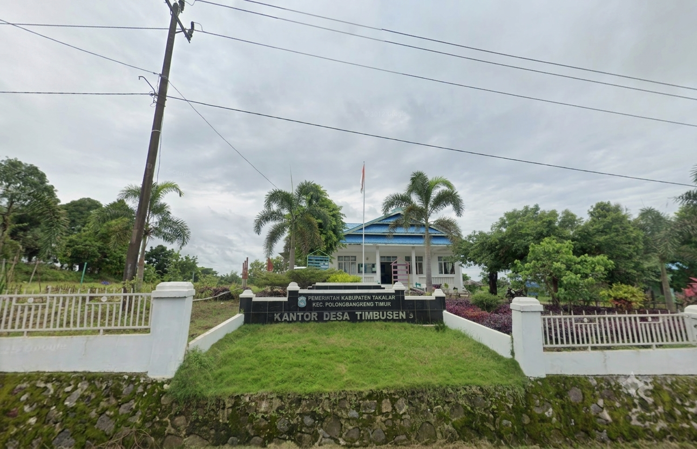

Dapatkan pengumuman resmi pemerintah desa, jadwal kegiatan kemasyarakatan, liputan program pembangunan, serta berita terbaru dari Desa Timbuseng.
Kantor Desa Timbuseng melayani pengurusan administrasi kependudukan (KTP, KK, Surat Pengantar) setiap hari kerja Senin s/d Jumat pukul 08:00 - 16:00 WITA. Pastikan membawa kelengkapan berkas yang diperlukan.
Informasi seputar agenda dan kegiatan pemerintahan serta warga Desa Timbuseng.

Pemerintah Desa Timbuseng terus meningkatkan kualitas pelayanan administratif warga melalui pemanfaatan portal sistem informasi desa terpadu...
Masyarakat senantiasa merawat nilai sejarah asal-usul nama desa serta melestarikan ritual budaya lokal yang diwariskan secara turun-temurun...
Fokus pembangunan infrastruktur diarahkan untuk mempermudah mobilitas perkebunan tebu serta kelancaran irigasi sawah warga...